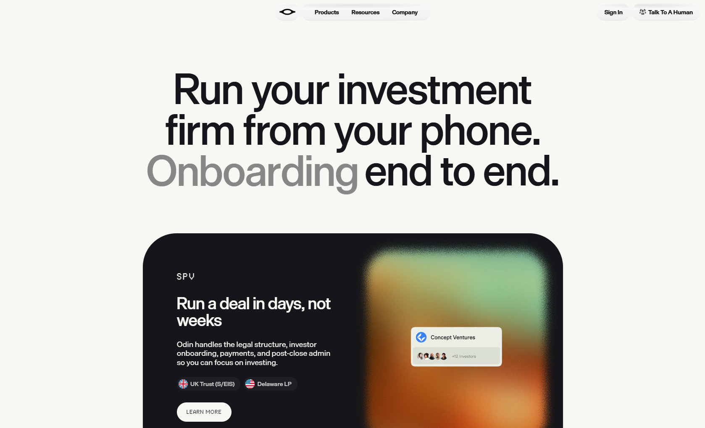

Odin
- Финансы и банки
- Финтех
- Утилитарный техно
- Минимализм
- Сайт жив

Что это
Сайт британской платформы для запуска и администрирования инвестиционных SPV, синдикатов и венчурных фондов: сделки, отчётность, комплаенс и выплаты. Кремово-чёрная система с чередованием светлых и тёмных секций, крупной типографикой и стеклянными панелями. Современный стильный сайт британской платформы для инвестиционных сделок.
Чем интересен
- На главной нет ни одного заголовка первого уровня: роль заголовка играет абзац с посимвольными фрагментами и скрытым текстом для скринридера — та же картина на страницах продуктов, контактов и учебного центра, и только на страницах «О платформе», политике и условиях заголовок первого уровня есть.
- Юридический слой проработан сильнее, чем у любого другого сайта коллекции: 41-страничное пользовательское соглашение версии 3.2 с датой, статус назначенного представителя регулируемой фирмы с номерами, кастодиан, покрытие компенсационного фонда, перечень рисков и применимое право.
- При этом страница условий отдаёт текст не в разметке: контейнер пуст, рядом стоит маркер отложенного клиентского рендеринга, а сам документ лежит в системе управления как PDF на 962 килобайта — текст пришлось извлекать из файла, а не со страницы.
- Анимационный движок — Motion, а не GSAP и не Lenis, и привязка к скроллу сделана в JavaScript: CSS-анимаций, управляемых скроллом, на сайте нет вовсе.
- Помимо библиотечных эффектов есть собственная графика на чистом WebGL: шейдеры преломляющего стекла с каустикой и хроматической каймой написаны вручную, three.js для этого не понадобился.
- Публичный набор данных системы управления отвечает без токена и отдаёт все типы документов — это удобно для разбора, но означает открытый доступ к контенту.
- Мелочь, заметная при проверке: в мета-описании главной между словами стоит управляющий символ разделителя строки.
Паспорт
- Домен
- joinodin.com
- Тип сайта
- Многостраничный
- Категории
- Финансы и банки
- Подкатегории
- Финтех
- Для кого
- Инвесторам, Финтеху, Банкам
- Стиль
- Утилитарный техно, Минимализм
- Язык
- Английский
- Страна
- Великобритания
- Автор
- не указано
- Год
- 2020
- Добавлен в коллекцию
- 02.10.2026
Палитра
-
#F6F8F3— 69% кадра -
#151619— 18% кадра -
#9B4D19— 3% кадра -
#85917F— 2% кадра -
#99BA84— 2% кадра
- Режим
- Светлая
- Цвет фона
- Нейтральный
Технические факты
- HTTPS
- да
- Meta viewport
- да
- Title
- Odin (4 симв.)
- Description
- Digital SPV & Fund Administration for investors building at the frontier. (в строке между словами стоит управляющий символ разделителя строки) (73 симв.)
- Open Graph
- да
- Структурированные данные
- нет
- Sitemap
- есть два: основная карта на 18 адресов и отдельный индекс блога со ссылкой на карту из 66 адресов
- Robots
- User-Agent: * / Allow: / и две директивы Sitemap
- Аналитика
- Google Tag Manager (GTM-W9ZK5X6S), CookieYes — управление согласиями
- Проверено ссылок
- 16
- Битые ссылки
- help.joinodin.com — 403 на все автоматические запросы, включая браузерный агент: похоже на защиту от ботов, доступность в живом браузере не подтверждена
- Контакты
- почта hello@joinodin.com, профили в Twitter и LinkedIn, страница контактов и отдельные ссылки на справочный центр и страницу статуса; юридический адрес указан в политике конфиденциальности
- Юридическая информация
- Join Odin Limited, компания Англии и Уэльса с номером в Companies House; назначенный представитель регулируемой FCA фирмы с номерами обеих, кастодиан третьей стороны, покрытие компенсационного фонда до 85 тысяч фунтов, финансовый омбудсмен, перечень рисков и применимое право Англии и Уэльса; пользовательское соглашение версии 3.2 от 21 сентября 2026 года
Технологии с доказательствами
- Next.js с App Router — заголовки X-Powered-By, признаки предрендера и устаревания кэша, чанки сборки с идентификатором развёртывания
- React и серверные компоненты — поток серверных компонентов в разметке, стриминг с маркерами границ и шаблонами
- Vercel — заголовки Server: Vercel, X-Vercel-Cache: HIT и HSTS на два года
- CSS Modules со SCSS — имена классов вида компонент-модуль с хешем и локальным именем, около тридцати таблиц стилей
- Sanity как headless-система управления — предзагрузка p15651fl.api.sanity.io, все медиа с cdn.sanity.io; публичный набор данных отвечает на запрос без токена
- Motion (бывший Framer Motion) — в бандле есть MotionValue, AnimatePresence, MotionConfig, LayoutGroup, useInView и счётчик режимов анимации; GSAP и Lenis отсутствуют
- Embla Carousel — инициализация каруселей со свободным перетаскиванием и прокруткой колесом мыши
- Mux и hls.js — адреса stream.mux.com с расширением m3u8 и обложки с image.mux.com, поля с идентификатором воспроизведения в данных; в коде выбор качества, битрейта и субтитров
- Собственные шейдеры стекла на чистом WebGL — классы сферы и изображения компилируют GLSL вручную: createShader, createProgram, семьдесят восемь обращений к униформам, в шейдере описаны размытие, яркость, искажение, преломление, каустика и хроматическая кайма; three.js не подключён
- Стеклянные панели — сто десять применений размытия подложки и отдельный набор переменных для размытия, заливки, обводки и радиуса
- Самохостинг шрифтов — три семейства Die Grotesk C, Die Grotesk A и переменный MD Thermochrome с локальными файлами и предзагрузкой; Google Fonts не используется
- Внешние сервисы — блог и подписка на Substack, страница вакансий на Notion, справочный центр по схеме Zendesk, отдельный поддомен со статусом сервисов
- Аналитика и согласия — контейнер Google Tag Manager и скрипт управления согласиями CookieYes
Что смотреть в первую очередь
Смотреть ради двух вещей: юридического слоя — такое подробное соглашение с указанием регулятора, кастодиана и рисков редкость даже для финтеха, — и собственной графики на чистом WebGL: шейдеры преломляющего стекла с каустикой и хроматической каймой написаны вручную, без three.js.
Похожие в коллекции
- Aevion — общее: Утилитарный техно, Минимализм, Графика WebGL и 3D, Липкие секции, Микроанимации
- Glide — общее: Минимализм, Утилитарный техно, Липкие секции, Параллакс, Микроанимации
- Tinloof — общее: Утилитарный техно, Минимализм, Микроанимации, Липкие секции
- Sutéra — общее: Утилитарный техно, Минимализм, Графика WebGL и 3D, Бегущая строка